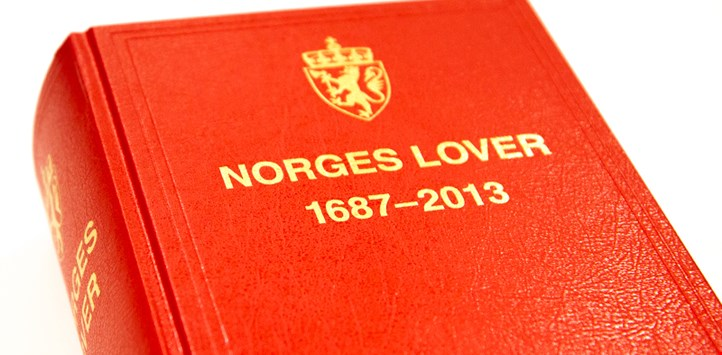

Dine rettigheter på nett
Når man bruker en app eller en tjeneste der man gir fra seg informasjon om seg selv, enten det er lokasjon eller publiserer et bilde på Facebook, har man rett til å måtte gi sitt samtykke til at denne informasjonen kan lagres og brukes. Hvis man nøler, kan man også trekke tilbake dette samtykke. Konsekvensene av at man nekter samtykke kan gjøre at man ikke får tilgang til tjenester som leverandørene tilbyr. Forbrukere av en tjeneste som henter og lagrer informasjon om geografisk lokasjonen har krav på å få vite hvilke opplysningene man gir fra seg og hva disse brukes til.

Et konkret eksempel på en personvernerklæring er Innovasjon Norge sin personvernserklæring, som i avsnitt 10 forteller at “Alle personer som spør har rett til informasjon om behandlinger av personopplysninger i en virksomhet etter personopplysningslovens § 18, 1. ledd”. Dette vil si at alle har rett til å vite hvilken informasjon som blir lagret om dem på nett.
 Utfordringer
Utfordringer